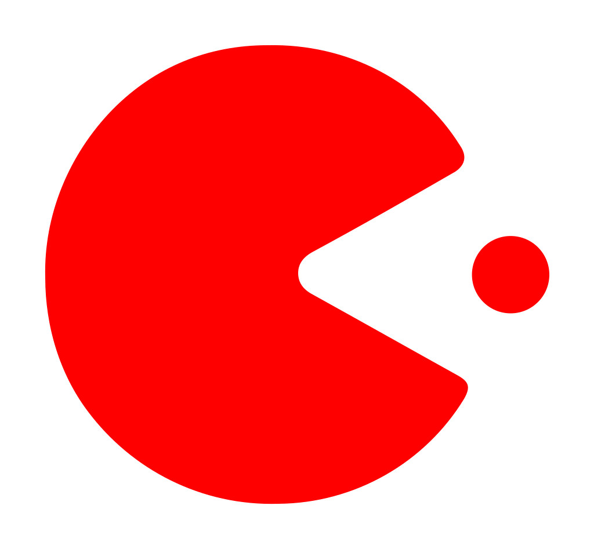
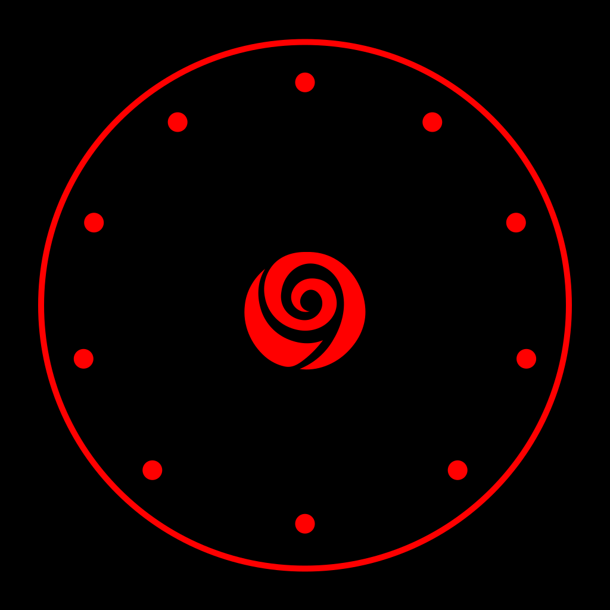
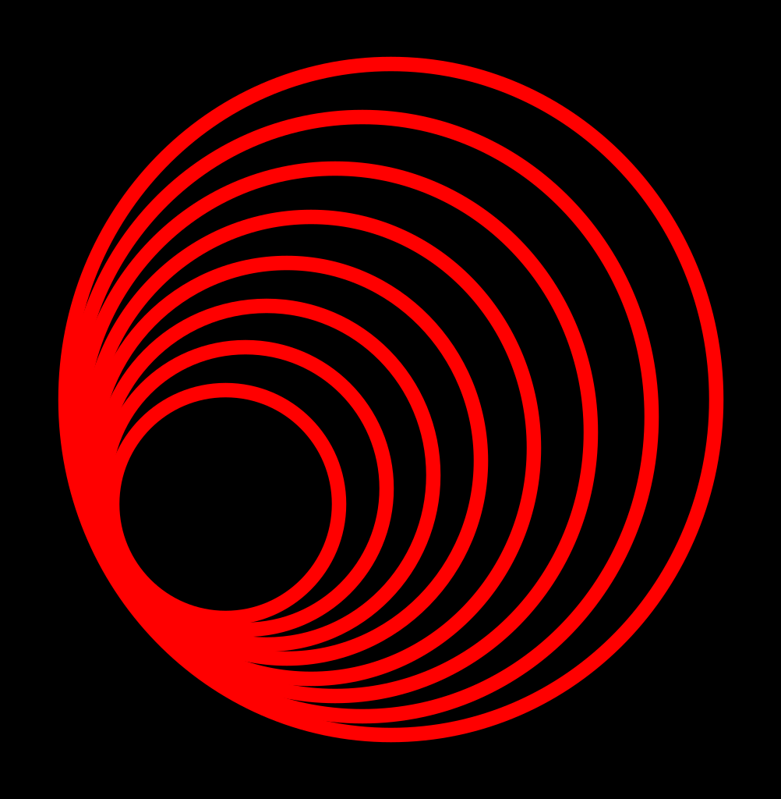
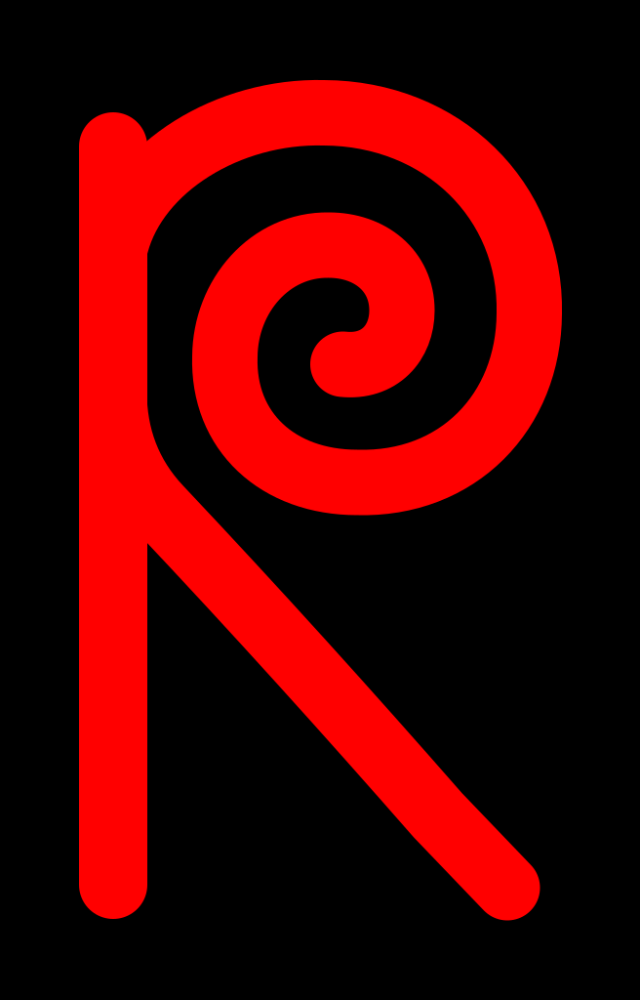
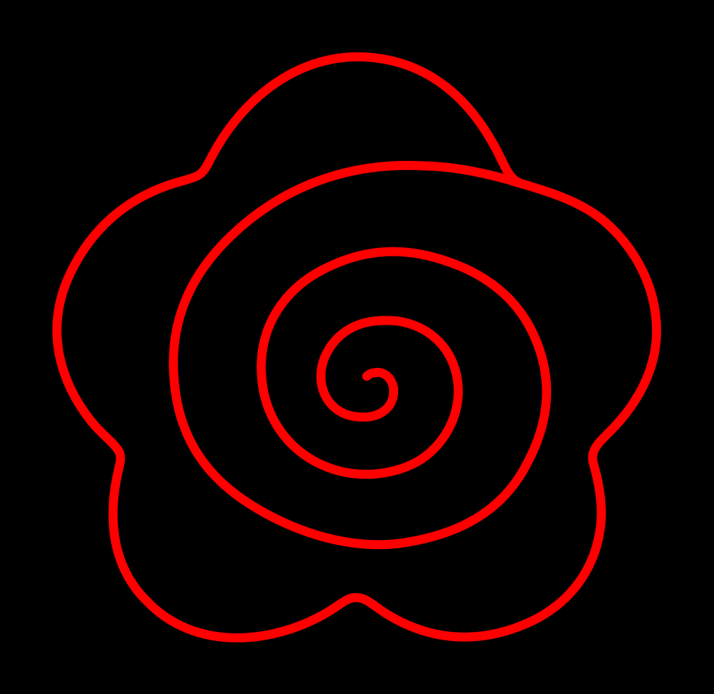
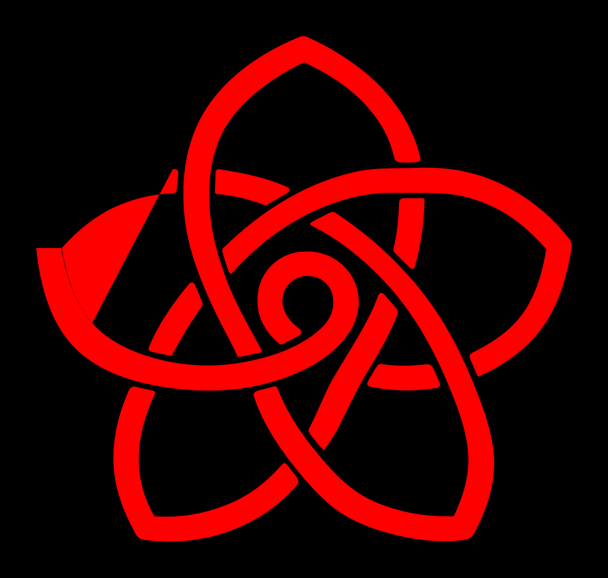
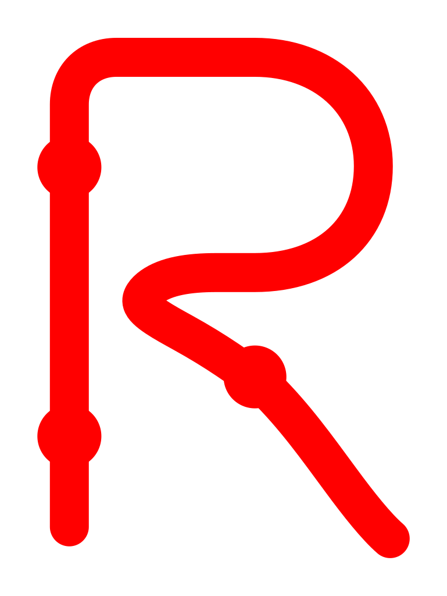
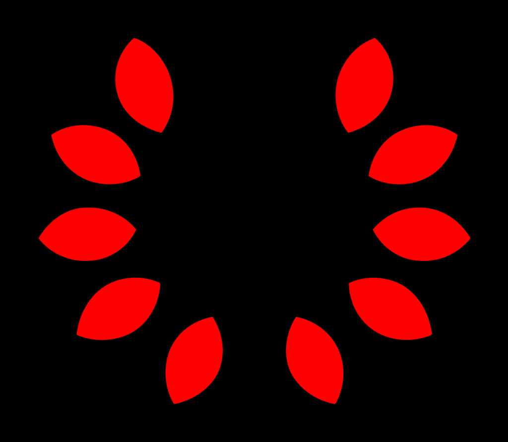
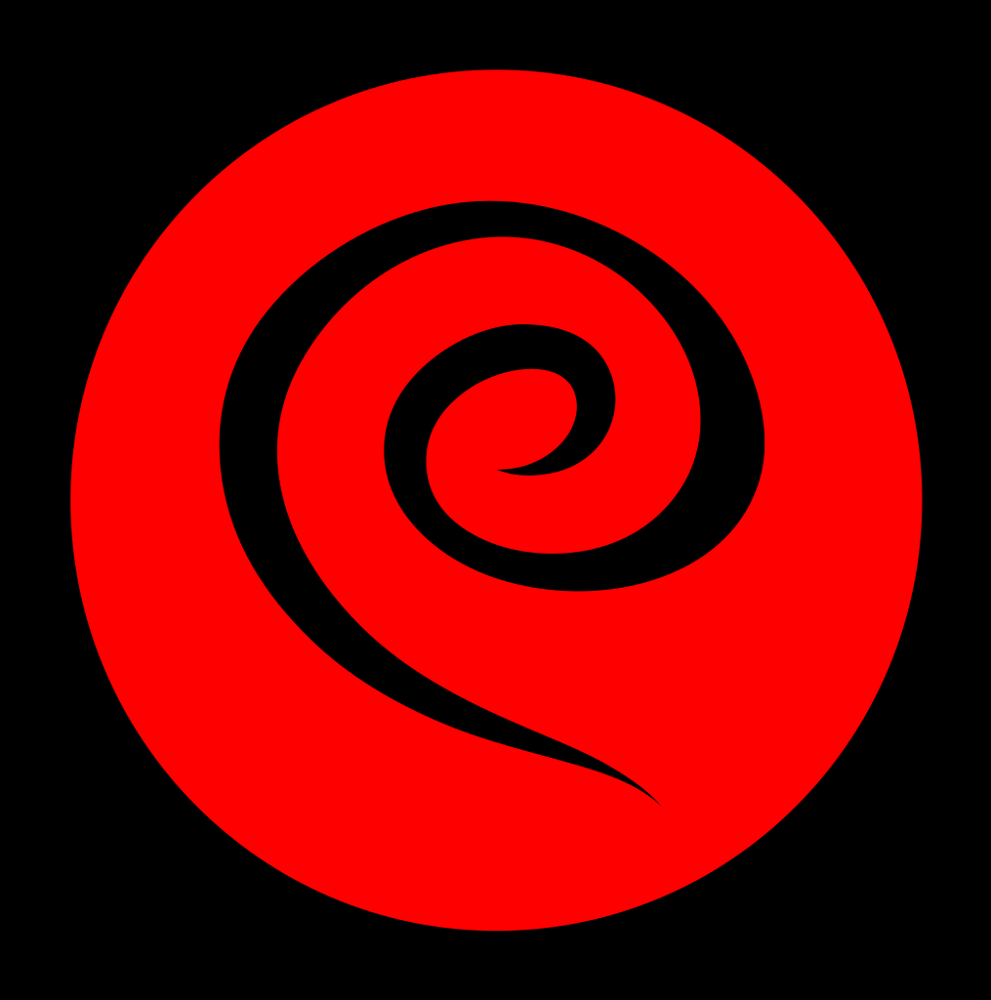
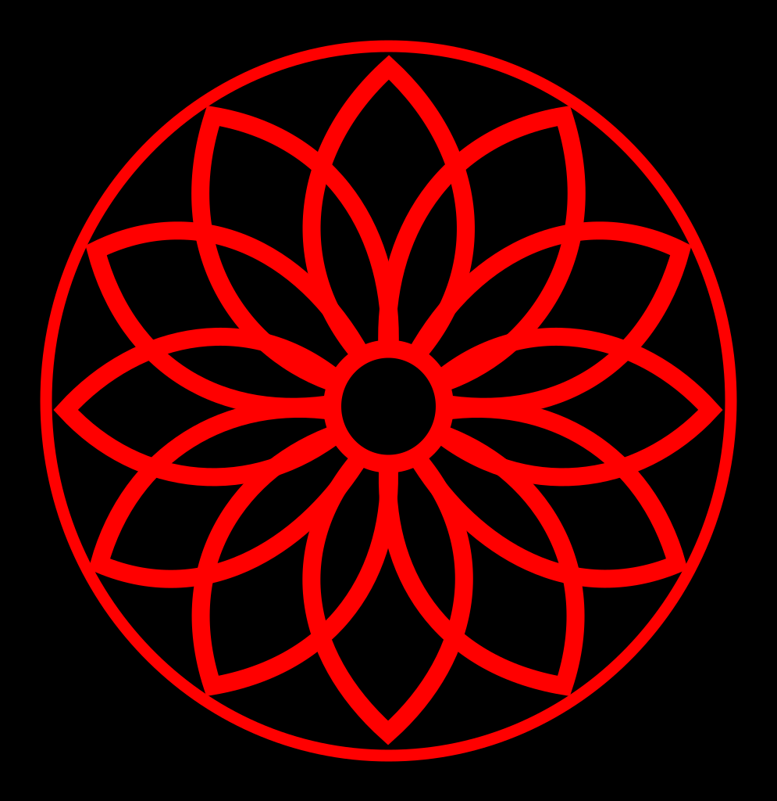

abstract-bead-arc
abstract-dial-sliceabstract-turns
hair-dial-rose
hair-moire
hair-r
hair-spiralhair-wave-rose
knot-rose-thinmono-bud-stemmono-handset-loop
mono-rosary-rmono-rose-open
petal-dot-ring
rose-cutout-circle
rosette-thin